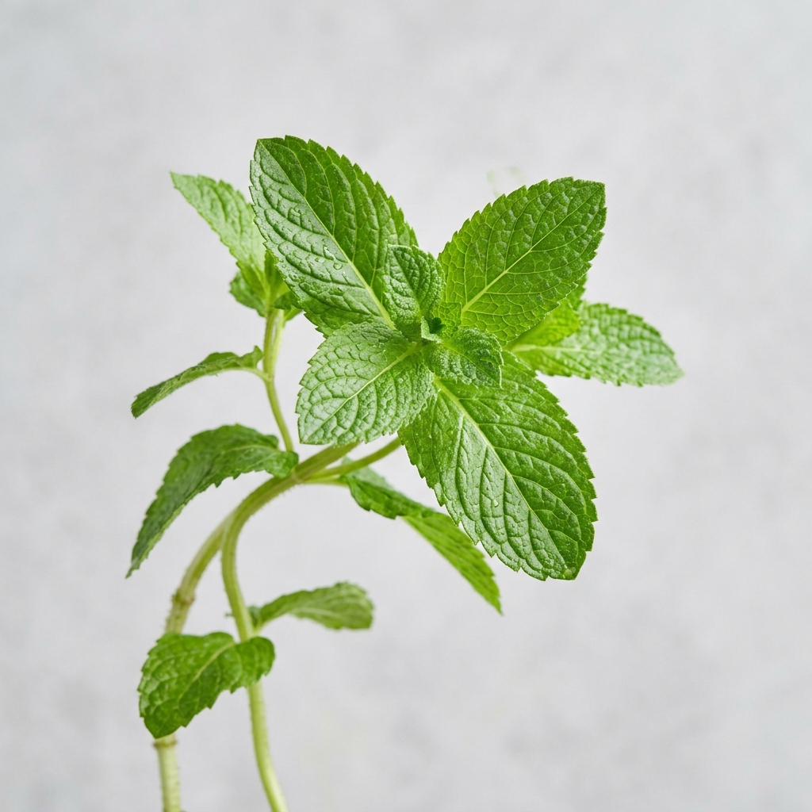
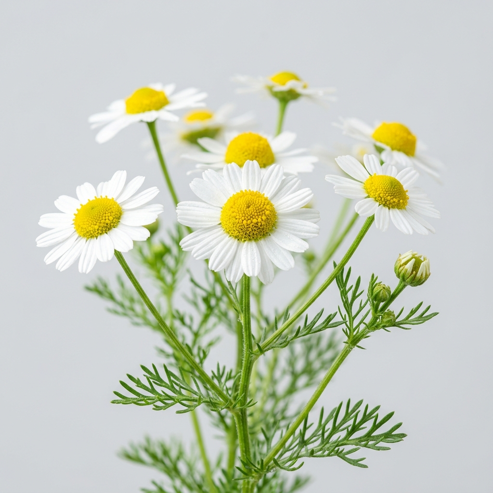

Our AI scanner will analyze the leaf's texture, color, and spot patterns. It cross-references these visual symptoms with thousands of known plant diseases to provide you with an accurate diagnosis and treatment plan!
1. Symptoms: Look for rust-like symptoms, including raised pustules or lesions on the undersides of leaves. These pustules may release rust-colored spores.
2. Visual Inspection: Examine the affected plant parts closely. Rust infections often present as orange, brown...

To unlock Universal Plant Detection for all plant species, please enter a free Google Gemini API key.